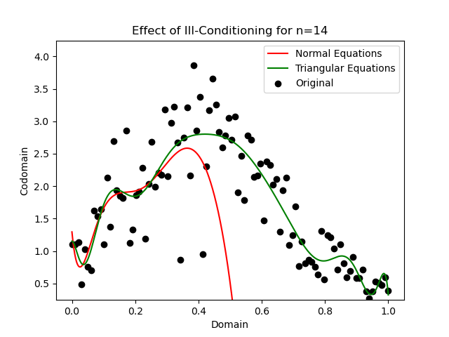

Your Computer Is Lying to You
A brief demonstration of the hardware limitations that force your computer to misrepresent information | View Code
"People don’t understand computers. Computers are magical boxes that do things. "
- Bruce Scheneier
Why Your Computer Lie
Your computer lies to you all the time. It lies about the numbers it calculates, the images it displays, and even the programs it runs. But why does it do this? And how can you know when you can trust it? We'll explore a few of the reasons why computers have to misrepresent information, and how you can avoid situations where these changes cause problems. We'll also discuss concepts like function conditioning and algorithm stability, which are important for understanding how computers work.
Whenever your computer does anything, it has to do math. However, the physical limitations of computer hardware and the design of these computations (such as floating point arithmetic) introduce errors due to their inherent finite precision of numerical representation. Computers use a fixed number of bits (binary digits) to store real numbers, limiting the range and accuracy of values they can represent. As a result, when dealing with numbers that have a vast range or require high precision, the numbers may be rounded or truncated during storage, leading toa loss of information.
Furthermore, floating-point arithmetic follows specific rules to perform operations like addition, subtraction, multiplication, and division on these approximate representations. These operations can introduce rounding errors, especially when combining numbers with vastly different magnitudes. Think adding 0.000001 to 10,000,000. This phenomenon is known as numerical instability or ill-conditioning. Over multiple computations, these small errors can accumulate and propagate, resulting in significant inaccuracies in the final results.
The challenge then lies in designing algorithms that minimize the amplification of errors, and selecting appropriate data types and precision levels to strike a balance between computational efficiency and numerical accuracy, especially in scientific and engineering applications where precision and reliability are crucial.
Underflow and Overflow
Underflow and overflow are two important concepts when discussing the representation of numerical values in computers. These phenomena occur when numbers exceed the limits of the finite range that can be stored using a specific data type, or when the magnitude of the number becomes too small to be accurately represented.
Underflow happens when a computed result becomes too close to zero to be represented accurately. When numbers with very small magnitudes are involved in calculations, they might be rounded down to zero due to the limited precision of floating-point representations. This loss of significant digits can lead to significant loss of information and result in inaccurate or meaningless calculations. Underflow can especially affect iterative algorithms where small values are repeatedly multiplied or divided.
Overflow occurs when a computed result exceeds the maximum value that can be represented by the chosen data type. When numbers with very large magnitudes are involved in calculations, they may exceed the range that the data type can handle. As a consequence, the representation "wraps around" to the minimum value, resulting in erroneous results. Overflow can be particularly problematic in algorithms that involve exponentiation, summation, or multiplication of large values.
Underflow and overflow can force your computer to lie to you because they lead to inaccurate numerical results. These issues can misrepresent the accuracy and precision of computations, giving a false sense of reliability and potentially leading to erroneous conclusions or decisions. To ensure trustworthy results, it is essential to handle underflow and overflow carefully and be aware of their impact on numerical computations.
Conditioning
One way to handle the impact of these inaccuracies is by considering the condition number of a function. This mathematical concept quantifies the sensitivity of the function's output with respect to changes in its input. In simpler terms, it measures how much the output of the function is likely to change when there are small variations in the input.
Mathematically, the condition number is defined as the ratio of the relative change in the output to the relative change in the input. A high condition number indicates that the function is ill-conditioned and highly sensitive to input changes, while a low condition number suggests that the function is more stable and less sensitive to perturbations in the input.
Functions with large condition numbers can contribute to significant errors and instability in numerical computations, especially when dealing with ill-conditioned problems. Hence, it is important to consider the condition number of a function to ensure accurate and reliable results in various computational tasks.

For example, for an ill-conditioned function like the Wilkinson Polynomial, even minor changes to the inputs and coefficients can cause large errors in the output, making these computations less reliable. This plot serves as a visual representation of the challenges and impact of dealing with ill-conditioned functions.
Here, the unperturbed Wilkinson polynomial’s roots are shown as large points in the complex plane, while the perturbed roots resulting from 100 different variations of the function are depicted as smaller points. The scattering of the small points around the larger ones highlights how small variations in the polynomial’s coefficients can lead to significant deviations in the computed roots.
Stability
While conditioning refers to the sensitivity of a mathematical problem to changes in its input, stability relates to how accurately an algorithm computes the value of a function from exact input, by accounting for the amplification of errors during the computation. In other words, it measures how well the algorithm maintains its accuracy despite small errors in the input.
A stable algorithm is one that produces results that are close to the true solution for a given problem by minimizing the amplification of errors during execution, even when subjected to slight changes in the input. As an example, consider the plot below, which demonstrates the effect of ill-conditioned functions on the accuracy and stability of polynomial fitting to data.
The data points, represented by dots on the plot, are approximated by two different polynomials using the ordinary least squares technique. The red curve represents the unstable approach for this computation, while the green curve corresponds to the stable approach.
The effect of the instability increases as the degree of the approximating polynomial increases, which we can see with this degree fourteen example. In contrast, the stable approach provides a smoother fit that closely matches the data points with significantly smaller errors. By employing numerical stable QR factorization and triangular solve algorithms, the stable approach reduces error amplification. As a result, it provides more robust and accurate polynomial fits, especially for higher degrees of the polynomial.
Can I Ever Trust My Computer?
You can rest assured, for most day to day situations and applications, computers have enough precision and memory to perform reliably. Furthermore, computer scientists design the software you enjoy in clever ways that mitigate the limitations of your hardware on the performance of your machine. However, these limitations are very real and they can cause legitimate problems, especially in industries that require precise calculations such as stock trading, cryptocurrency, and finance. If you’d like to see how I made the plots and calculations I showed in this article, you can view the source code on my GitHub.